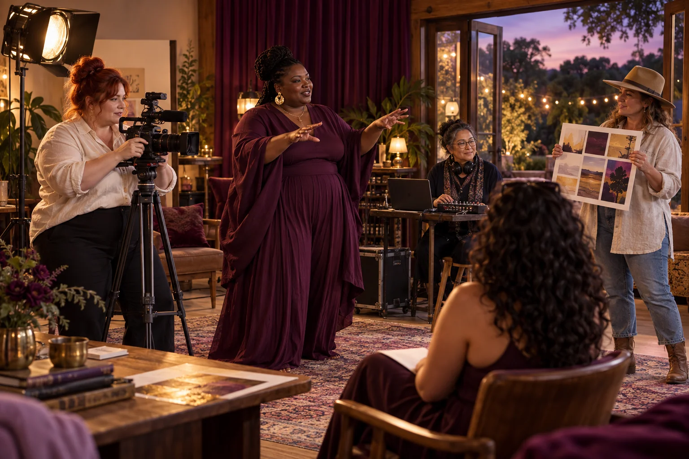

Invite adults to choose a fictional household with several caring relationships.

500 Queens / Matrimony of Many
Matrimony of Many
Explore how adults in varied households can make care, responsibilities and decisions explicit.
Follow the connections. Choose your direction.
The need worth working on.
The title invites questions about relationships and shared life beyond a single household pattern. People may want to discuss multi-adult families, chosen family or shared care, but those discussions can be overwhelmed by assumptions about what everyone should want. A useful service starts with people's own definitions and boundaries.
What the enterprise could offer.
Create a facilitated adult learning and household-planning concept using fictional scenarios. Explore practical questions about time, money, care, privacy, conflict and leaving an arrangement. The historical title does not imply that any particular relationship structure has legal recognition, nor that one arrangement suits everyone.
People to build with
- Adults exploring shared household responsibilities
- Community facilitators teaching communication and agreement-making
- Researchers examining diverse forms of care and belonging
A fictional household agreement
Map daily tasks, private space, decision rights and shared resources.
Discuss how disagreement, changed circumstances and an exit would be handled.
Ask relevant qualified advisers to identify questions requiring individual professional advice.
Revise the worksheet so people can use it without disclosing intimate details.
The first result
A practical discussion worksheet and a clearly bounded facilitator guide.
What needs to be demonstrated.
Practical pilot
The starting evidence
Household responsibilities can be explored through facilitated scenarios. No legal status or relationship outcome is established by this concept.
The open question
The source does not define the intended relationship model, service, participants or professional delivery team.
The next measurement
Test whether users can identify unresolved responsibilities and articulate a workable next conversation.
Build the means to deliver.
Useful capabilities and resources
- An experienced adult facilitator
- People with diverse lived experience who choose to contribute
- Qualified referral pathways for individual legal or counselling questions
A possible business model
Educational workshops or commissioned facilitation, with any personalised professional service delivered by appropriately qualified people.
A leadership decision to practise
Protect each participant's ability to disagree or leave a discussion. Do not let a charismatic vision substitute for individual consent.
People, consequences and decisions.
- A shared agreement can conceal unequal bargaining power.
- General worksheets may be mistaken for legal documents.
- One relationship model may be presented as a universal solution.
If equality were being designed now...
- Who carries the unpaid care, and can that distribution be challenged?
- Can every adult retain privacy, independent voice and a realistic way to leave?
Begin with women's own experiences across bodies, ages, cultures and places. Invite disagreement and choose a practical change together.
Create a women-led design brief →Build your learning council.


Build alongside these ideas.
Humanities and funSex and Sexual Education
Create adult relationship and sexuality education shaped by consent, body diversity and honest questions.
Practical pilot
Humanities and funMental Health Support
Help people find a suitable next human support step without turning distress into a product label.
Practical pilot
Humanities and funPhilosophy and Life Long Learning
Make sustained philosophical learning part of ordinary community life and practical decision-making.
Practical pilot
Market analysisPopulation Stability
Explore population change through community needs, personal choice and transparent scenarios.
Practical pilot
Follow existing public concept work.
Connected public conceptFuture of Life 2045
Explore possible futures for relationships, living systems, intelligence, movement, science and culture.
Connected public conceptGAJRA Earth Infinity
A public practice for listening, choosing useful actions, examining results and improving what comes next.
From the original suggestion to a working brief.
Developed from original enterprise 96 in the 500 Queens VC NEW Long presentation (slide 18) and the planning document (page 8). This expanded brief is a proposed development path, not evidence of an operating venture or a confirmed partner.
Original title: Matrimony of Many. The pilot, business model and learning connections on this page are proposed developments of that original idea.